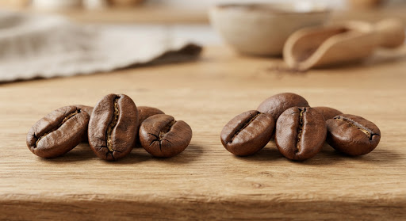

Featured Knowledge
October 24, 2024
•
BREWING SCIENCE
•
4 min read
What is the Real Difference Between Arabica and Robusta?
Arabica tumbuh di ketinggian lebih tinggi (>1.000 mdpl) dengan siklus pematangan lebih lambat yang menghasilkan kepadatan lipid dan keasaman buah yang kompleks. Sementara Robusta memiliki kadar kafein hampir dua kali lipat dan asam klorogenat alami yang memberikan crema tebal serta ketahanan alami dari hama.
Profil Komparasi Biji
Arabica Acidity / Sugars
60% Lipid
Robusta Crema / Caffeine
2.7% Caffeine